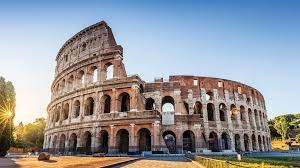

Coliseu
O Coliseu de Roma é um dos monumentos mais icônicos do mundo, repleto de história e curiosidades fascinantes.
- Foi construído entre os anos 70 e 80 d.C. durante o Império Romano.
- Podia abrigar cerca de 50 mil a 80 mil espectadores.
- Era usado para combates de gladiadores, caças de animais e outros espetáculos públicos.
- Possuía um sistema avançado de túneis subterrâneos, chamado hipogeu.
- Sofreu danos devido a terremotos e ao saque de materiais ao longo dos séculos.
- Hoje, é um dos pontos turísticos mais visitados da Itália.
O Coliseu de Roma é um dos monumentos mais impressionantes do mundo antigo. Construído há quase 2.000 anos, ele ainda fascina milhões de visitantes todos os anos.
Curiosidades sobre o Coliseu
- O verdadeiro nome do Coliseu é "Anfiteatro Flaviano", em homenagem à dinastia que o construiu.
- Além de gladiadores, também houve batalhas navais simuladas no Coliseu, quando a arena era inundada com água.
- Os espetáculos eram gratuitos para o público, financiados pelo imperador para ganhar apoio popular.
- Possuía um sistema complexo de elevadores para subir animais e cenários para a arena.
- Foi usado como fortaleza na Idade Média e até como fábrica em alguns períodos.
- Atualmente, é uma das Sete Maravilhas do Mundo Moderno.